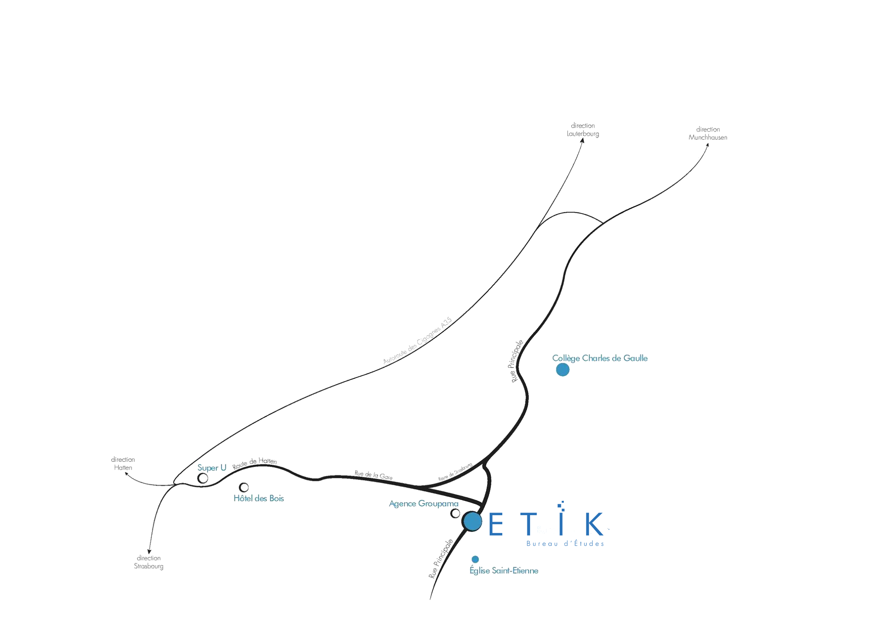

ETiK Bureau d’Etudes
18 rue Principale
67470 SELTZ
03 90 55 38 28
06 70 77 64 41
contact@etik-be.com
Horaires : du lundi au vendredi de 8h à 12h et de 13h30 à 17h30

-------------
Accueil Réalisations Contact